Dynatrace OpenPipeline - Collector Logs#
In this module we'll utilize Dynatrace OpenPipeline to process OpenTelemetry Collector logs at ingest, in order to make them easier to analyze and leverage. The logs will be ingested by OpenTelemetry Collector, deployed on Kubernetes as part of the previous module. The OpenTelemetry Collector logs are output mixed JSON/console format, making them difficult to use by default. With OpenPipeline, the logs will be processed at ingest, to manipulate fields, extract metrics, and raise alert events in case of any issues.
Goals:
- Parse JSON content
- Set loglevel and status
- Remove unwanted fields/attributes
- Extract metrics: successful data points
- Extract metrics: dropped data points
- Alert: zero data points

OpenPipeline is an architectural component of Dynatrace SaaS. It resides between the Dynatrace SaaS tenant and Grail data lakehouse. Logs (,traces, metrics, events, and more) are sent to the Dynatrace SaaS tenant and route through OpenPipeline where they are enriched, transformed, and contextualized prior to being stored in Grail.
Query Logs#
Query and discover the OpenTelemetry Collector logs as they are ingested and stored in Dynatrace. Use Dynatrace Query Language (DQL) to transform the logs at query time and prepare for Dynatrace OpenPipeline configuration.
Import Notebook into Dynatrace
Download OpenTelemetry Collector Logs Notebook
OpenTelemetry Collector Logs - Ondemand Processing at Query Time (Notebook)
The OpenTelemetry Collector can be configured to output JSON structured logs as internal telemetry. Dynatrace DQL can be used to filter, process, and analyze this log data to ensure reliability of the OpenTelemetry data pipeline.
Query logs in Dynatrace
DQL:
fetch logs
| filter k8s.namespace.name == "dynatrace" and k8s.container.name == "otc-container" and telemetry.sdk.name == "opentelemetry"
| sort timestamp desc
| limit 50
Result:
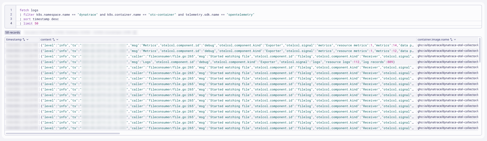
Parse JSON Content#
Parses a record field and puts the result(s) into one or more fields as specified in the pattern. The parse command works in combination with the Dynatrace Pattern Language for parsing strings.
Parse JSON Object Documentation
There are several ways how to control parsing elements from a JSON object. The easiest is to use the JSON matcher without any parameters. It will enumerate all elements, transform them into Log processing data type from their defined type in JSON and returns a variant_object with parsed elements.
The content field contains JSON structured details that can be parsed to better analyze relevant fields. The structured content can then be flattened for easier analysis.
FieldsFlatten Command Documentation
Sample:
{
"level": "info",
"ts": "2025-12-31T19:36:45.773Z",
"msg": "Logs",
"otelcol.component.id": "debug",
"otelcol.component.kind": "Exporter",
"otelcol.signal": "logs",
"resource logs": "131",
"log records": "800"
}
Query logs in Dynatrace
DQL:
fetch logs
| filter k8s.namespace.name == "dynatrace" and k8s.container.name == "otc-container" and telemetry.sdk.name == "opentelemetry"
| sort timestamp desc
| limit 50
| parse content, "JSON:jc"
| fieldsFlatten jc, prefix: "content."
| fieldsKeep timestamp, app.label.name, content, jc, "content.*"
Result:

Set loglevel and status fields#
Selection and Modification Documentation
The fieldsAdd command evaluates an expression and appends or replaces a field.
The JSON structure contains a field level that can be used to set the loglevel field. It must be uppercase.
- loglevel possible values are: NONE, TRACE, DEBUG, NOTICE, INFO, WARN, SEVERE, ERROR, CRITICAL, ALERT, FATAL, EMERGENCY
- status field possible values are: ERROR, WARN, INFO, NONE
The if conditional function allows you to set a value based on a conditional expression. Since the status field depends on the loglevel field, a nested if expression can be used.
Query logs in Dynatrace
DQL:
fetch logs
| filter k8s.namespace.name == "dynatrace" and k8s.container.name == "otc-container" and telemetry.sdk.name == "opentelemetry"
| sort timestamp desc
| limit 50
| parse content, "JSON:jc"
| fieldsFlatten jc, prefix: "content."
| fieldsAdd loglevel = upper(content.level)
| fieldsAdd status = if(loglevel=="INFO","INFO",else: // most likely first
if(loglevel=="WARN","WARN",else: // second most likely second
if(loglevel=="ERROR","ERROR", else: // third most likely third
if(loglevel=="NONE","NONE",else: // fourth most likely fourth
if(loglevel=="TRACE","INFO",else:
if(loglevel=="DEBUG","INFO",else:
if(loglevel=="NOTICE","INFO",else:
if(loglevel=="SEVERE","ERROR",else:
if(loglevel=="CRITICAL","ERROR",else:
if(loglevel=="ALERT","ERROR",else:
if(loglevel=="FATAL","ERROR",else:
if(loglevel=="EMERGENCY","ERROR",else:
"NONE"))))))))))))
| fields timestamp, loglevel, status, content, content.level
Result:
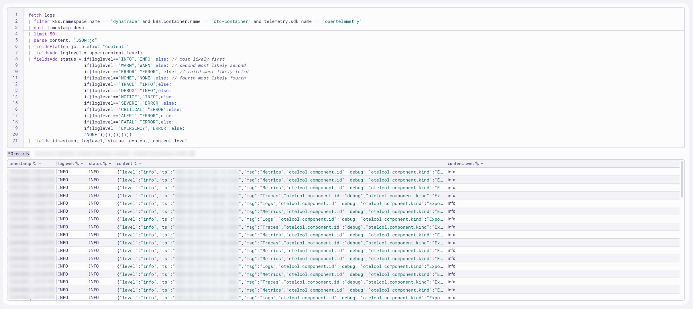
Remove unwanted fields/attributes#
The fieldsRemove command will remove selected fields.
FieldsRemove Command Documentation
After parsing and flattening the JSON structured content, the original fields should be removed. Fields that don't add value should be removed at the source, but if they are not, they can be removed with DQL.
Every log record should ideally have a content field, as it is expected. The content field can be updated with values from other fields, such as content.msg and content.message.
Query logs in Dynatrace
DQL:
fetch logs
| filter k8s.namespace.name == "dynatrace" and k8s.container.name == "otc-container" and telemetry.sdk.name == "opentelemetry"
| sort timestamp desc
| limit 50
| parse content, "JSON:jc"
| fieldsFlatten jc, prefix: "content."
| fieldsRemove jc, content.level, content.ts, log.iostream
| fieldsAdd content = if((isNotNull(content.msg) and isNotNull(content.message)), concat(content.msg," | ",content.message), else:
if((isNotNull(content.msg) and isNull(content.message)), content.msg, else:
if((isNull(content.msg) and isNotNull(content.message)), content.message, else:
content)))
| fields timestamp, content, content.msg
Result:

Extract Successful Data Points Metric#
The summarize command enables you to aggregate records to compute results based on counts, attribute values, and more.
Summarize Command Documentation
The JSON structured content contains several fields that indicate the number of successful data points / signals sent by the exporter.
- logs: resource logs, log records
- metrics: resource metrics, metrics, data points
- traces: resource spans, spans
Query logs in Dynatrace
DQL:
fetch logs
| filter k8s.namespace.name == "dynatrace" and k8s.container.name == "otc-container" and telemetry.sdk.name == "opentelemetry"
| sort timestamp desc
| parse content, "JSON:jc"
| fieldsFlatten jc, prefix: "content."
| filter matchesValue(`content.otelcol.component.kind`,"Exporter")
| fieldsRemove content, jc, content.level, content.ts, log.iostream
| summarize {
resource_metrics = sum(`content.resource metrics`),
metrics = sum(`content.metrics`),
data_points = sum(`content.data points`),
resource_spans = sum(`content.resource spans`),
spans = sum(`content.spans`),
resource_logs = sum(`content.resource logs`),
log_records = sum(`content.log records`)
}, by: { signal = `content.otelcol.signal`, exporter = `content.otelcol.component.id`, collector = app.label.name, k8s.cluster.name}
Result:
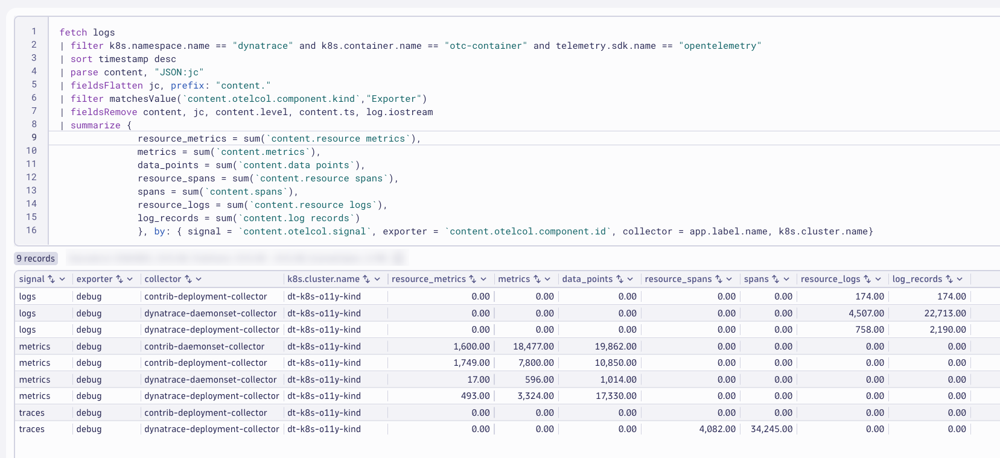
Extract Dropped Data Points Metric#
The JSON structured content contains several fields that indicate the number of dropped data points / signals sent by the exporter.
- dropped items
- signal
- (exporter) name
- collector
Query logs in Dynatrace
DQL:
fetch logs
| filter k8s.namespace.name == "dynatrace" and k8s.container.name == "otc-container" and telemetry.sdk.name == "opentelemetry"
| sort timestamp desc
| parse content, "JSON:jc"
| fieldsFlatten jc, prefix: "content."
| filter matchesValue(`content.otelcol.component.kind`,"exporter")
| filter matchesValue(`content.level`,"error") and isNotNull(`content.dropped_items`)
| summarize dropped_items = sum(`content.dropped_items`), by: {signal = `content.otelcol.signal`, collector = app.label.name, component = `content.otelcol.component.id`}
Result:
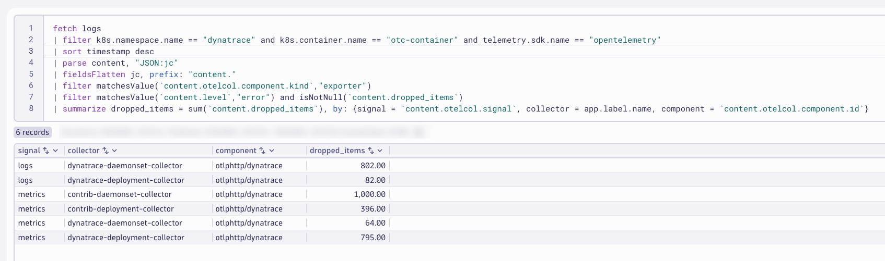
You likely won't have any data matching your query as you shouldn't have data drops. You can force data drops by toggling your Dynatrace API Access Token off for a couple minutes and then turning it back on.
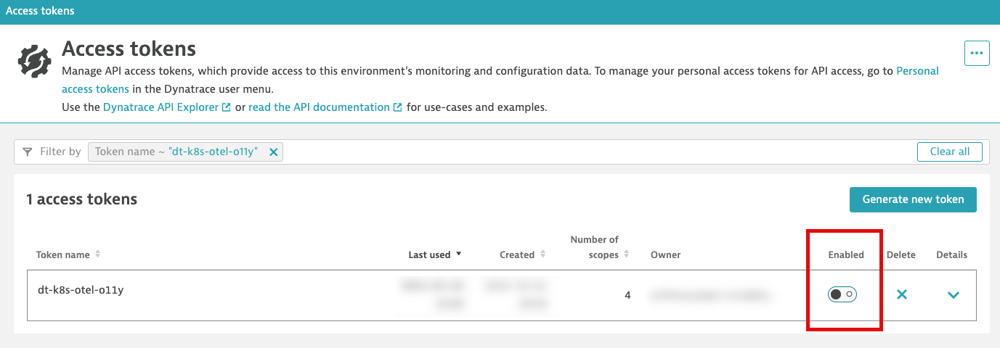
Alert on Zero Data Points#
It would be unexpected that the collector exporter doesn't send any data points or signals. We could alert on this unexpected behavior.
The field content.otelcol.signal will indicate the type of data point or signal. The fields content.log records, content.data points, and content.spans will indicate the number of signals sent. If the value is 0, that is unexpected.
Query logs in Dynatrace
DQL:
fetch logs
| filter k8s.namespace.name == "dynatrace" and k8s.container.name == "otc-container" and telemetry.sdk.name == "opentelemetry"
| sort timestamp desc
| limit 100
| parse content, "JSON:jc"
| fieldsFlatten jc, prefix: "content."
| filter matchesValue(`content.otelcol.component.kind`,"exporter")
| summarize {
logs = countIf(matchesValue(`content.otelcol.signal`,"logs") and matchesValue(toString(`content.log records`),"0")),
metrics = countIf(matchesValue(`content.otelcol.signal`,"metrics") and matchesValue(toString(`content.data points`),"0")),
traces = countIf(matchesValue(`content.otelcol.signal`,"traces") and matchesValue(toString(`content.spans`),"0"))
}, by: {signal = `content.otelcol.signal`, collector = app.label.name}
Result:
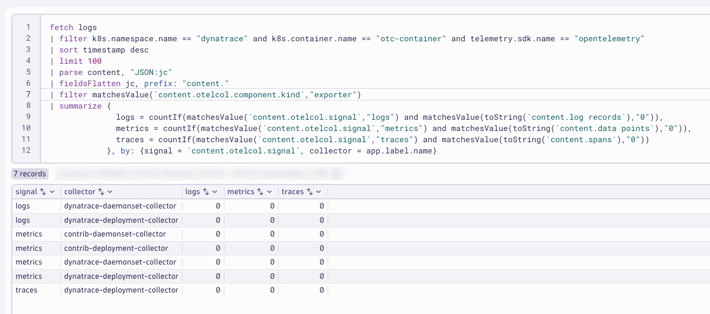
DQL in Notebooks Summary
DQL gives you the power to filter, parse, summarize, and analyze log data quickly and on the fly. This is great for use cases where the format of your log data is unexpected. However, when you know the format of your log data and you know how you will want to use that log data in the future, you'll want that data to be parsed and presented a certain way during ingest. OpenPipeline provides the capabilites needed to accomplish this.
Configure OpenPipeline#
Configure Dynatrace OpenPipeline for OpenTelemetry Collector logs.
View Images
If the images are too small and the text is difficult to read, right-click and open the image in a new tab.
Save Often
Consider saving your pipeline configuration often to avoid losing any changes.
In your Dynatrace tenant, launch the OpenPipeline app. Begin by selecting Logs from the left-hand menu of telemetry types. Then choose Pipelines. Click on + Pipeline to add a new pipeline.
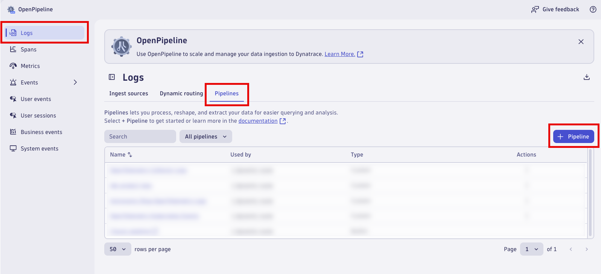
Name the new pipeline, OpenTelemetry Collector Logs. Click on the Processing tab to begin adding Processor rules.

Parse JSON Content#
Add a processor to parse the JSON structured content field. Click on + Processor to add a new processor.
Name:
Parse JSON Content
Matching condition:
k8s.namespace.name == "dynatrace" and k8s.container.name == "otc-container" and telemetry.sdk.name == "opentelemetry"
Processor definition:
parse content, "JSON:jc"
| fieldsFlatten jc, prefix: "content."
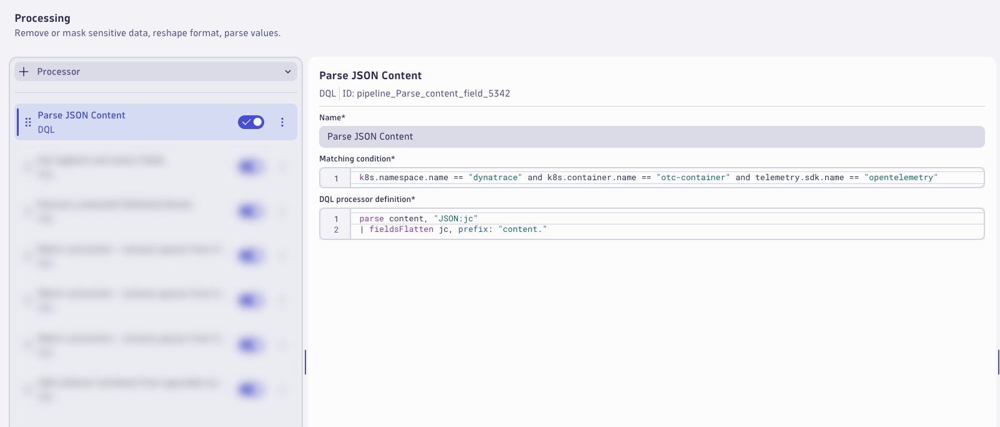
Loglevel and Status#
Add a processor to set the loglevel and status fields. Click on + Processor to add a new processor.
Name:
Set loglevel and status fields
Matching condition:
isNotNull(`content.level`)
Processor definition:
fieldsAdd loglevel = upper(content.level)
| fieldsAdd status = if(loglevel=="INFO","INFO",else: // most likely first
if(loglevel=="WARN","WARN",else: // second most likely second
if(loglevel=="ERROR","ERROR", else: // third most likely third
if(loglevel=="NONE","NONE",else: // fourth most likely fourth
if(loglevel=="TRACE","INFO",else:
if(loglevel=="DEBUG","INFO",else:
if(loglevel=="NOTICE","INFO",else:
if(loglevel=="SEVERE","ERROR",else:
if(loglevel=="CRITICAL","ERROR",else:
if(loglevel=="ALERT","ERROR",else:
if(loglevel=="FATAL","ERROR",else:
if(loglevel=="EMERGENCY","ERROR",else:
"NONE"))))))))))))

Remove Fields#
Add a processor to remove the extra and unwanted fields. Click on + Processor to add a new processor.
Name:
Remove unwanted fields/attributes
Matching condition:
isNotNull(jc) and isNotNull(loglevel) and isNotNull(status) and loglevel!="NONE"
DQL processor definition
fieldsRemove jc, content.level, content.ts, log.iostream
| fieldsAdd content = if((isNotNull(content.msg) and isNotNull(content.message)), concat(content.msg," | ",content.message), else:
if((isNotNull(content.msg) and isNull(content.message)), content.msg, else:
if((isNull(content.msg) and isNotNull(content.message)), content.message, else:
content)))

Remove Spaces from Metrics Fields#
Add a processor to remove the spaces from the metrics fields. Click on + Processor to add a new processor.
Name:
Metric extraction - remove spaces from fields - metrics
Matching condition:
matchesValue(`content.otelcol.component.kind`,"exporter") and matchesValue(`content.otelcol.signal`,"metrics")
DQL processor definition
fieldsAdd content.resource_metrics = `content.resource metrics`
| fieldsAdd content.data_points = `content.data points`
| fieldsRemove `content.resource metrics`, `content.data points`
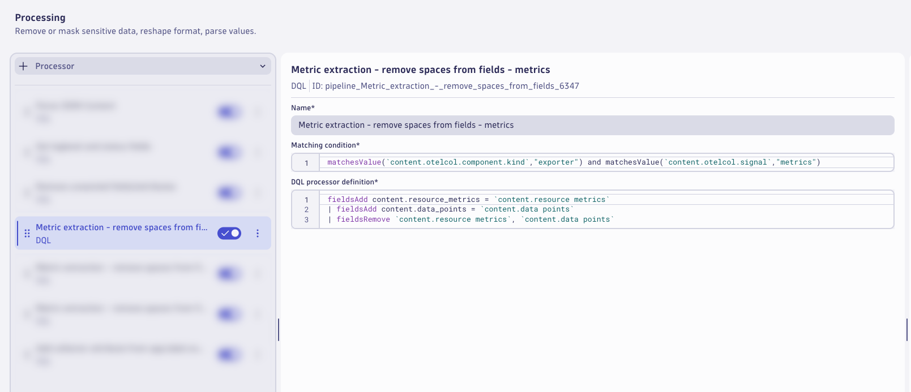
Remove Spaces from Logs Fields#
Add a processor to remove the spaces from the logs fields. Click on + Processor to add a new processor.
Name:
Metric extraction - remove spaces from fields - logs
Matching condition:
matchesValue(`content.otelcol.component.kind`,"exporter") and matchesValue(`content.otelcol.signal`,"logs")
DQL processor definition
fieldsAdd content.resource_logs = `content.resource logs`
| fieldsAdd content.log_records = `content.log records`
| fieldsRemove `content.resource logs`, `content.log records`
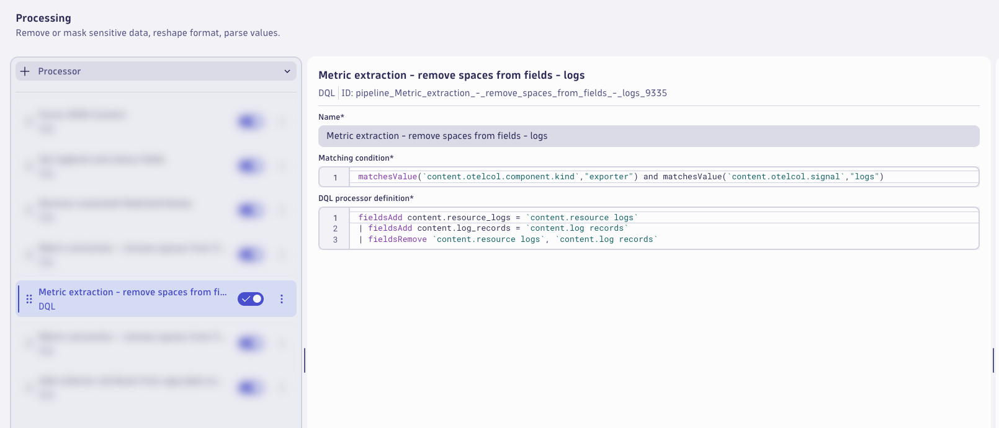
Remove Spaces from Traces Fields#
Add a processor to remove the spaces from the traces fields. Click on + Processor to add a new processor.
Name:
Metric extraction - remove spaces from fields - traces
Matching condition:
matchesValue(`content.otelcol.component.kind`,"exporter") and matchesValue(`content.otelcol.signal`,"traces")
DQL processor definition
fieldsAdd content.resource_spans = `content.resource spans`
| fieldsRemove `content.resource spans`
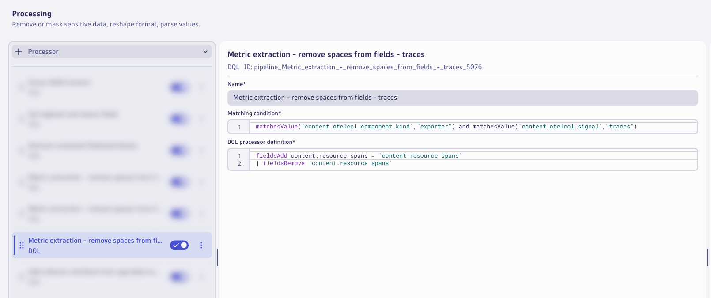
Collector Attribute#
Add a processor to add the collector attribute from the app.label.name field. Click on + Processor to add a new processor.
Name:
Add collector attribute from app.label.name
Matching condition:
isNotNull(app.label.name)
DQL processor definition
fieldsAdd collector = app.label.name
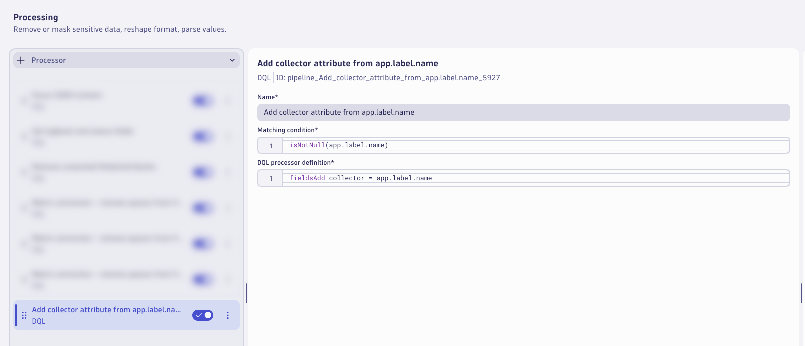
Consider Saving
Consider saving your pipeline configuration often to avoid losing any changes.
Zero Data Points for Metrics#
Switch to the Data extraction tab.
Add a processor to extract a Davis Event. Click on + Processor to add a new processor.
Name:
Zero data points / signals - metrics
Matching condition:
matchesValue(`content.otelcol.signal`,"metrics") and `content.data_points` == 0
Event Name:
OpenTelemetry Collector - Zero Data Points - Metrics
Event description:
The OpenTelemetry Collector has sent zero data points for metrics.
Additional event properties:
| Property | Value |
|---|---|
| collector | {collector} |
| k8s.cluster.name | {k8s.cluster.name} |
| k8s.pod.name | {k8s.pod.name} |
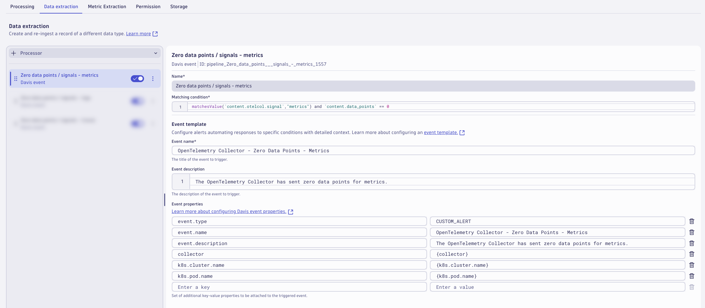
Zero Data Points for Logs#
Add a processor to extract a Davis Event. Click on + Processor to add a new processor.
Name:
Zero data points / signals - logs
Matching condition:
matchesValue(`content.otelcol.signal`,"logs") and `content.log_records` == 0
Event Name:
OpenTelemetry Collector - Zero Data Points - Logs
Event description:
The OpenTelemetry Collector has sent zero data points for logs.
Additional event properties:
| Property | Value |
|---|---|
| collector | {collector} |
| k8s.cluster.name | {k8s.cluster.name} |
| k8s.pod.name | {k8s.pod.name} |

Zero Data Points for Traces#
Add a processor to extract a Davis Event. Click on + Processor to add a new processor.
Name:
Zero data points / signals - traces
Matching condition:
matchesValue(`content.otelcol.signal`,"traces") and `content.spans` == 0
Event Name:
OpenTelemetry Collector - Zero Data Points - Traces
Event description:
The OpenTelemetry Collector has sent zero data points for traces.
Additional event properties:
| Property | Value |
|---|---|
| collector | {collector} |
| k8s.cluster.name | {k8s.cluster.name} |
| k8s.pod.name | {k8s.pod.name} |
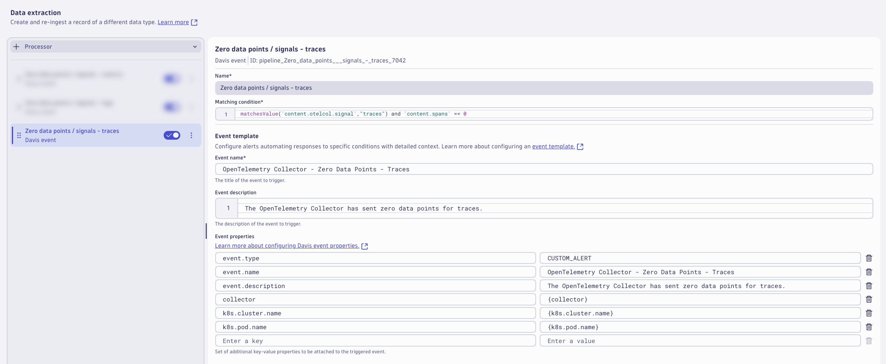
Consider Saving
Consider saving your pipeline configuration often to avoid losing any changes.
Successful Data Points for Metrics#
Switch to the Metric Extraction tab.
Add a processor to extract a metric for successful metric data points from the exporter logs. Click on + Processor to add a new processor.
Name:
Successful data points - metrics
Matching condition:
matchesValue(`content.otelcol.component.kind`,"exporter") and matchesValue(`content.otelcol.signal`,"metrics")
Field Extraction:
content.data_points
Metric Key:
otelcol_exporter_sent_metric_data_points
Dimensions:
| Dimension |
|---|
| collector |
| k8s.cluster.name |
| k8s.pod.name |

Successful Data Points for Logs#
Add a processor to extract a metric for successful log data points from the exporter logs. Click on + Processor to add a new processor.
Name:
Successful data points - logs
Matching condition:
matchesValue(`content.otelcol.component.kind`,"exporter") and matchesValue(`content.otelcol.signal`,"logs")
Field Extraction:
content.log_records
Metric Key:
otelcol_exporter_sent_log_records
Dimensions:
| Dimension |
|---|
| collector |
| k8s.cluster.name |
| k8s.pod.name |
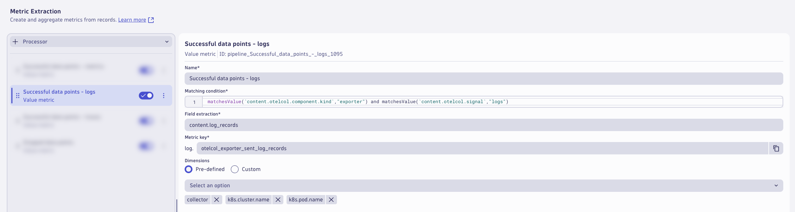
Successful Data Points for Traces#
Add a processor to extract a metric for successful trace data points from the exporter logs. Click on + Processor to add a new processor.
Name:
Successful data points - traces
Matching condition:
matchesValue(`content.otelcol.component.kind`,"exporter") and matchesValue(`content.otelcol.signal`,"traces")
Field Extraction:
content.spans
Metric Key:
otelcol_exporter_sent_trace_spans
Dimensions:
| Dimension |
|---|
| collector |
| k8s.cluster.name |
| k8s.pod.name |

Dropped Data Points#
Add a processor to extract a metric for dropped data points from the exporter logs. Click on + Processor to add a new processor.
Name:
Dropped data points
Matching condition:
matchesValue(`content.otelcol.component.kind`,"exporter") and isNotNull(`content.dropped_items`) and isNotNull(`content.otelcol.signal`)
Field Extraction:
content.dropped_data_points
Metric Key:
otelcol_exporter_dropped_data_points_by_data_type
Dimensions:
| Dimension |
|---|
| collector |
| k8s.cluster.name |
| k8s.pod.name |
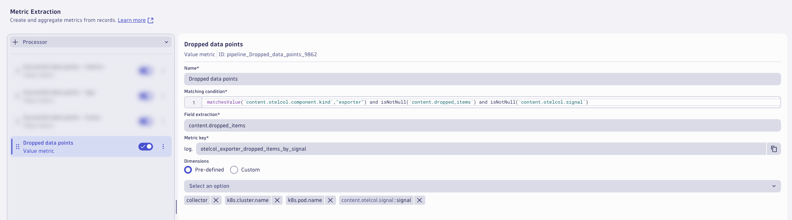
The pipeline is now configured, click on Save to save the pipeline configuration.
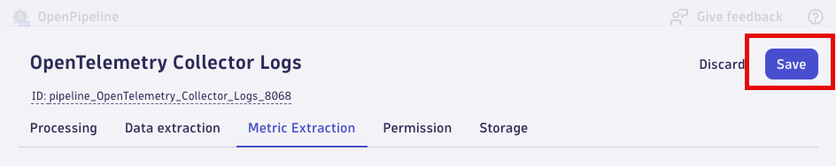
Dynamic Route#
A pipeline will not have any effect unless logs are configured to be routed to the pipeline. With dynamic routing, data is routed based on a matching condition. The matching condition is a DQL query that defines the data set you want to route.
Click on Dynamic Routing to configure a route to the target pipeline. Click on + Dynamic Route to add a new route.

Configure the Dynamic Route to use the OpenTelemetry Collector Logs pipeline.
Name:
OpenTelemetry Collector Logs
Matching condition:
matchesValue(k8s.namespace.name,"dynatrace") and matchesValue(k8s.container.name,"otc-container") and matchesValue(telemetry.sdk.name,"opentelemetry")
Pipeline:
OpenTelemetry Collector Logs
Click Add to add the route.

Validate that the route is enabled in the Status column. Click on Save to save the dynamic route table configuration.

Allow dynatrace OpenTelemetry Collectors to generate new log data that will be routed through the new pipeline (3-5 minutes).
Analyze Results#
Analyze the OpenTelemetry Collector logs after Dynatrace OpenPipeline processing. Run the queries from the Notebook.
Analyze the results in Dynatrace (Notebook)#
Query the OpenTelemetry Collector logs that have been processed by Dynatrace OpenPipeline.
DQL: OpenPipeline Processing Results
fetch logs
| filter k8s.namespace.name == "dynatrace" and k8s.container.name == "otc-container" and telemetry.sdk.name == "opentelemetry"
| fieldsRemove cloud.account.id // removed for data privacy and security reasons only
| sort timestamp desc
| limit 50
| fieldsKeep timestamp, collector, k8s.cluster.name, loglevel, status, "content.*", content
Result:

The logs are now parsed at ingest into a format that simplifies our queries and makes them easier to use, especially for users that don't work with these log sources or Dynatrace DQL on a regular basis.
Query the new log metric extracted by Dynatrace OpenPipeline, using the timeseries command.
DQL: Extracted metrics: successful data points / signals
timeseries { logs = sum(log.otelcol_exporter_sent_log_records) }, by: {k8s.cluster.name, collector}
Result:
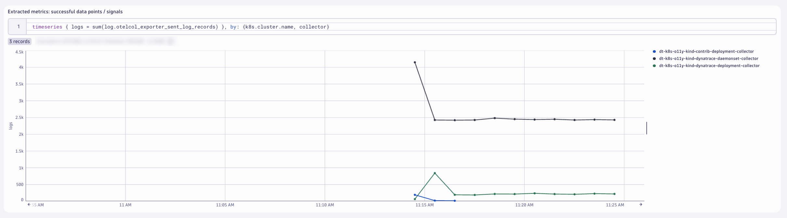
By extracting the metric(s) at ingest time, the data points are stored long term and can easily be used in dashboards, anomaly detection, and automations.
Metric Extraction Documentation
Query the new dropped data points / signals metric extracted by Dynatrace OpenPipeline, using the timeseries command.
DQL: Extracted metrics: dropped data points / signals
timeseries { dropped_items = sum(log.otelcol_exporter_dropped_items_by_signal, default: 0) }, by: {k8s.cluster.name, collector, signal}
Result:

You likely won't have any data matching your query as you shouldn't have data drops. You can force data drops by toggling your Dynatrace API Access Token off for a couple minutes and then turning it back on.
OpenTelemetry Collector Dashboard#
Import Dashboard into Dynatrace
OpenTelemetry Collector Dashboard
Explore the OpenTelemetry Collector [IsItObservable] - OpenPipeline Dashboard that you imported.
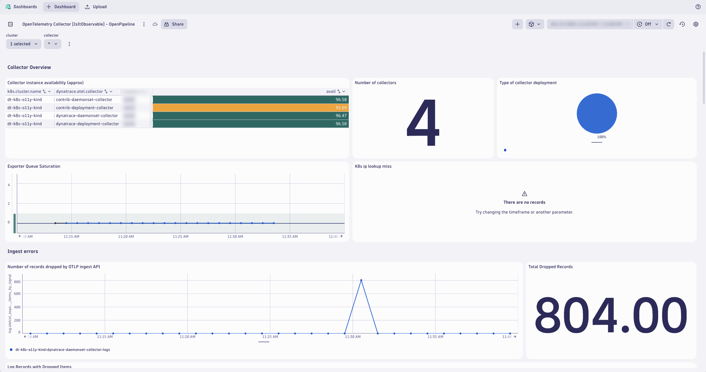
Wrap Up#
What You Learned Today
By completing this module, you've successfully set up Dynatrace OpenPipeline pipelines to process the OpenTelemetry logs at ingest.
- OpenTelemetry Collector logs
- Parse JSON structured content field to easily filter, aggregate, and analyze on nested fields
- Set loglevel and status fields to easily identify errors with the OpenTelemetry Collector
- Remove unwanted fields/attributes to reduce log bloat and optimize queries
- Extract metrics: successful data points to track OpenTelemetry Collector health and reduce heavy log queries
- Extract metrics: dropped data points to track OpenTelemetry Collector health and reduce heavy log queries
- Alert: zero data points to be alerted on OpenTelemetry Collector health issues